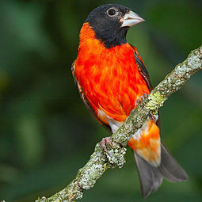

Galería

El canario silvestre o serín canario (Serinus canaria) es una especie de ave paseriforme de la familia de los fringílidos (Fringillidae). A pesar de su nombre tanto común como científico es autóctono de varios subarchipiélagos de la Macaronesia: las islas Canarias, Azores y Madeira, y no solo de las primeras. Su pariente más cercano es verdecillo europeo (S. serinus).
El canario se considera, según una ley del Gobierno de Canarias, el símbolo natural del archipiélago canario, junto con la palmera canaria. Su hábitat natural se ubica en áreas semiabiertas, como huertos y arboledas. Hace el nido en arbustos o árboles.
Según Antonio Arnaiz-Villena el canario silvestre de la Macaronesia, probablemente, tiene unas estrechas relaciones genéticas con sus congéneres del continente africano. El origen de todos los canarios bien pudiera estar en las especies que viven en África del Sur.
El canario silvestre es de colores parduzcos en la parte superior y amarillo verdoso en la cara y partes inferiores. Es más grande y tiene menos contraste que otros pájaros de la misma familia, como el verdecillo, y su plumaje es más gris y marrón. Llega hasta los 13 cm de longitud. Su esperanza de vida en estado salvaje suele ser de entre cinco y diez años, a lo sumo.
Aunque los canarios silvestres son de tonos apagados, desde el siglo XVII se ha cruzado selectivamente esta especie en cautividad, dando origen a los colores vivos conocidos hoy en día (blanco, naranja, cobre, amarillo, etc.) presentes en los canarios domésticos. De hecho, el canario rojo fue el primer animal creado mediante selección genética,89 introduciendo los tonos rojos en el plumaje mediante el cruce con el cardenalito. El gen permite que los carotenoides amarillos se conviertan en ketocarotinoides es el denominado CYP2J19.
Es endémica de las islas Canarias, Azores, y Madeira, en la región de la Macaronesia, en el este del océano Atlántico. En las islas Canarias, es común que en Tenerife, La Gomera, La Palma y El Hierro, pero más local en Gran Canaria, y raro en Lanzarote y Fuerteventura. Es común en Madeira al igual que en Porto Santo y las islas Desertas; se ha registrado en las islas Salvajes. En las Azores, es común en todas las islas.
Habita en una amplia variedad de ecosistemas, desde bosques de pino y laurel hasta en dunas de arena. Es más común en áreas semiabiertas con árboles pequeños, tales como huertos y bosquecillos. Se da frecuentemente en hábitats creados por el hombre, tales como parques y jardines. Se encuentra desde el nivel del mar hasta por lo menos una altitud de 760 m s. n. m. en Madeira, hasta 1100 m s. n. m. en las Azores, y por encima de 1500 m s. n. m. en las islas Canarias.
El trino del pájaro es singular y de parecerse a algo ha de ser al gorjeo del jilguero.
Se alimenta en el suelo o entre la vegetación baja, por lo general lo hace en bandadas. Su dieta se compone principalmente de semillas, tales como las de las malas hierbas, las de poáceas y frutos. También se alimenta de otras partes vegetales y de pequeños insectos.
Es un ave gregaria que a menudo anida en grupos, con cada pareja defendiendo un territorio pequeño. El nido es en forma de cuenco, y lo construyen sobre un árbol o arbusto a una altura superior a 160 cm del suelo, más comúnmente a entre 3 a 4 m. Está bien escondido entre las hojas, a menudo en el extremo de una rama. Está hecho de fibras vegetales, hierba, musgo y otros materiales de plantas, y forrado con materiales suaves, como pelos y plumas. Los huevos son depositados entre enero y julio en las islas Canarias, de marzo a junio —con un pico de abril y mayo— en Madeira, y de marzo a julio —con un pico de mayo y junio— en las Azores. Son de color azul pálido o azul-verde con manchas violeta o rojizo concentradas en el extremo menos en punta. Cada nidada contiene de tres a cinco huevos, logrando producir con éxito un promedio de dos a tres crías por año. Los huevos se incuban entre trece y catorce días y los polluelos abandonan el nido a partir de los catorce días hasta los veintiún días, con mayor frecuencia entre los quince y diecisiete días.
La población ha sido estimada en ochenta mil a noventa mil parejas en las islas Canarias, de treinta mil a sesenta mil parejas en las Azores, y de cuatro mil a cinco mil parejas en Madeira.
Se ha establecido en el atolón de Midway, en el noroeste de las islas de Hawái, donde fue introducido por primera vez en 1911. También se lo introdujo en el vecino Atolón Kure, pero no logró establecerse allí. La especie fue introducida en las Bermudas en 1930 y comenzó rápidamente a multiplicarse, pero su población comenzó a declinar en la década de 1940 después de que las cochinillas devastaron los bosques de cedro de las Bermudas, por lo que para la década de 1960 el ave se había extinguido en esas islas. La especie también se ha reproducido en Puerto Rico, pero todavía no se ha establecido allí.
| Imagen | Raza de Canario |
| Canario llarguet blanco dominante. | |
|  | Cardenalito de Venezuela. |
 | Canario factor rojo. |
| Canario con lipocromo rojo intenso. | |
| Canario moteado. |